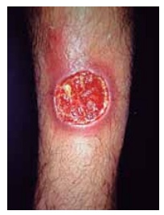
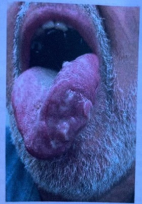
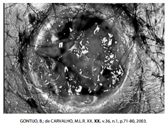
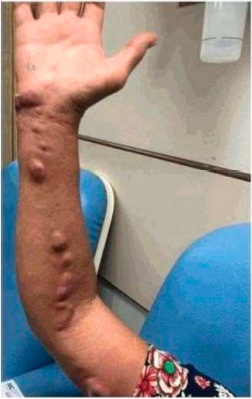
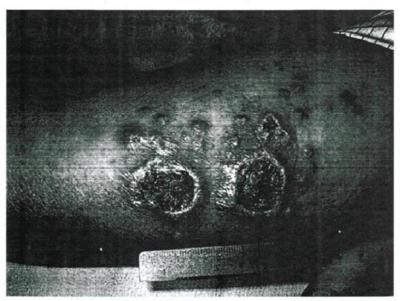

Questão 1 · Diagnóstico · 4000178585Um homem de 40 anos, funcionário de um saúde da família, devido a uma ferida no antebraço. Relatou que a lesão surgira havia 2 meses, inicialmente como um pequeno “caroço”, que cresceu e ulcerou. Disse, ainda, que, nas últimas três semanas, surgiram novos “caroços” no antebraço. No exame físico, apresentava-se em bom estado geral, afebril, eutró co, com úlcera de aproximadamente 3 cm de diâmetro no antebraço direito. Também no antebraço direito, apresentava 4 nódulos eritematosos distribuídos de forma linear entre a úlcera e a fossa cubital. Apresentava, ainda, linfonodo axilar direito aumentado, de consistência broelástica, levemente doloroso à palpação. Nesse caso, qual é a hipótese diagnóstica mais provável?
A Esporotricose.
B Cromoblastomicose.
C Leishmaniose tegumentar.
D Blastomicose sul-americana.
Revisar: possível letra faltando em enunciado
Questão 2 · Dermatologia · Diagnóstico · 4000170095Médico em unidade básica de saúde localizada em região onde a leishmaniose tegumentar americana é endêmica atende paciente com 45 dias de evolução de lesão cutânea única, indolor, de formato arredondado, com base eritematosa, in ltrada e de consistência rme, borda bem delimitada e elevada, fundo avermelhado e com granulações grosseiras, localizada no dorso da mão. A abordagem correta é:
A confirmar o diagnóstico com exames parasitológico e/ou imunológico para notificar no Sistema de Informação de Agravos de Notificação.
B iniciar tratamento com isotionato de pentamidina.
C acionar as ações de vigilância de animais silvestres e domésticos no peridomicílio do paciente.
D realizar exame parasitológico com pesquisa de amastigo tas em esfregaço da lesão ou
Questão 3 · Tratamento · Dermatologia · Manif estações clínicas · 4000170061Homem de 35 anos, proprietário rural, apresenta lesão na face lateral da perna direita há 5 meses, que se iniciou como “pelo encravado” com evolução progressiva (imagem). Nega outras lesões cutâneas ou sintomas sistêmicos. Exame histopatológico da lesão: reação granulomatosa em arranjo tuberculoide constituída por macrófagos, células epitelioides e células gigantes, com presença de estruturas arredondadas dentro dos macrófagos, além de in ltrado histiolinfoplasmocitário. Exame parasitológico direto da lesão: negativo. O diagnóstico e tratamento são, respectivamente,

A hanseníase dimorfa; rifampicina associada à clofazimina.
B leishmaniose tegumentar; antimoniato de N-metilglucamina.
C leishmaniose tegumentar; cetoconazol.
D hanseníase tuberculoide; rifampicina associada à dapsona.
Questão 4 · Dermatologia · Manif estações clínicas · 4000164284Homem, 61 anos, relata lesão na língua há 3 anos ( figura), com di culdade de alimentação e perda de peso. Etilista de 6 garrafas de cerveja por semana e nega tabagismo. Ao exame: BEG, corado. Linfonodo submandibular à esquerda de 0,5 cm, móvel e indolor. Cicatriz de aspecto apergaminhado no dorso do pé direito. Anatomopatológico da lesão da língua: epitélio com hiperplasia pseudoepiteliomatosa; in ltrado na submucosa denso e misto, rico em plasmócitos, com esboço de formação de granulomas. Não foram visualizados parasitas nas colorações especiais (GMS, Giemsa e Ziehl-Neelsen) e as culturas da lesão foram negativas. Qual é o diagnóstico mais provável?

A Carcinoma espinocelular.
B Paracoccidioidomicose.
C Doença de Behçet.
D Leishmaniose mucosa.
Questão 5 · Vetores · 4000163803Sobre a Leishmaniose Tegumentar Americana (LTA), assinale a alternativa CORRETA:
A Doença infecciosa, contagiosa, causada por protozoário, de transmissão vertical, que acomete pele e mucosas.
B Os vetores da LTA são insetos denominados flebotomíneos, conhecidos popularmente como mosquito palha, tatuquira, birigui.
C O período de incubação no homem, é em média de 2 semanas, podendo apresentar períodos mais curtos (2 a 3 dias).
D A infecção e a doença conferem imunidade ao paciente.
Questão 6 · Esporotricose · 4000163500A esporotricose de transmissão felina (ETF) ou esporotricose de transmissão zoonótica apresenta-se como um surto epidêmico em expansão, sendo que no Brasil foram reportados milhares de casos humanos e felinos entre 2000 e 2021. A respeito do assunto, considere as seguintes afirmativas: 1. A infecção é causada por Sporothrix schenckii, um fungo dimórfico. 2. As principais formas clinicas da ETF são de natureza cutânea e linfocutânea. 3. O diagnóstico da ETF é por exame histopatológico, na maioria dos casos. 4. O tratamento da ETF é feito com o itraconazol. Assinale a alternativa correta.
A Somente a afirmativa 1 é verdadeira.
B Somente as afirmativas 1 e 3 são verdadeiras.
C Somente as afirmativas 2 e 4 são verdadeiras.
D Somente as afirmativas 2, 3 e 4 são verdadeiras.
E As afirmativas 1, 2, 3 e 4 são verdadeiras.
Questão 7 · Esporotricose · 4000163447Paciente de 50 anos, sexo feminino, procura atendimento ambulatorial por lesão de pele em dorso da mão direita, três semanas após ter sido arranhada por um gato doente que encontrou na rua, o qual apresentava múltiplas lesões ulceradas de pele. Ela refere que a lesão provocada pela arranhadura inicial cicatrizou, porém nos últimos dias notou o aparecimento de lesões papulares no local, com formação de placa eritematosa in ltrada e posterior ulceração da lesão. Refere também que percebeu lesões nodulares mais profundas no antebraço e braço direito, ascendentes, aparentemente seguindo trajeto linfático ao exame físico. Diante do exposto, o provável diagnóstico e a indicação para o caso são, respectivamente:
A doença da arranhadura do gato – tratamento empírico com azitromicina.
B infecção secundária da lesão inicial por bactérias presentes na pele, como Staphylococcus aureus – tratamento empírico com cefalexina.
C micobacteriose cutânea de transmissão animal – investigação complementar com biópsia para cultura e exame anátomopatológico para confirmação diagnóstica.
D toxoplasmose por inoculação direta – sorologia IgG e IgM para toxoplasmose para confirmação diagnóstica.
E provável esporotricose de transmissão felina – biópsia da lesão para cultura e exame anátomopatológico para confirmação diagnóstica.
Questão 8 · Leishmaniose tegumentar · 4000153251Um homem de 40 anos de idade, que trabalha com extrativismo orestal no interior do estado do Amazonas, onde passa a maior parte do ano, procurou atendimento médico em Unidade Básica de Saúde devido à lesão exulcerada em tórax há 6 meses, evoluindo com aumento progressivo. Ao exame físico, não apresenta alterações, exceto a lesão única abaixo, a qual foi biopsiada. O resultado do exame histopatológico esperado para esse caso e o tratamento proposto devem ser

A infiltrado neutrofílico com aspecto verde maçã quando corado pelo Vermelho Congo; fluconazol.
B células de Kupffer acompanhadas de nódulos regenerativos com áreas de fibrose; prednisona.
C infiltrado inflamatório inespecífico com células de Hürthle e presença de invasão vascular; benzonidazol.
D granulomas e estruturas arredondadas compatíveis com formas amastigotas; N-metilglucamina.
Questão 9 · Esporotricose · 4000146582Um homem com 36 anos de idade comparece à Unidade Básica de Saúde queixando-se de lesão cutânea localizada no membro superior direito. Ele informa que, cerca de 10 dias após realizar atividades de jardinagem em seu sítio, utilizando a enxertia de algumas de suas laranjeiras, observou o aparecimento de uma pápula dolorosa no 1.º quirodáctilo direito. Nos dias subsequentes, essa lesão evoluiu com ulceração local, surgindo, posteriormente, lesões similares no mesmo antebraço. Durante o exame, são observadas pápulas ulceradas na região assinalada, havendo aspecto sugestivo de disseminação linfangítica do processo. O médico suspeita de uma determinada dermatose de etiologia infecciosa. Com base na apresentação clínica e considerando a história epidemiológica relatada, o agente etiológico e o meio de cultura em agar adequado para sua detecção são, respectivamente,
A Nocardia asteroídes e chocolate.
B Sporothrix schenckii e Sabouraud.
C Staphylococcus aureus e Sabouraud.
D Mycobacterium kansasii e chocolate.
Questão 10 · Agente etiológico · Tratamento · Manif estações clínicas · 4000145871A leishmaniose e Leishmania
A A Leishmania amazonensis e a Leishmania guyanensis ocorrem, preferencialmente, nas a
B A Leishmania braziliensis é o principal agente etiológico no Brasil e na América Latina.
C A Leishmania braziliensis provoca lesão ulcerada, u
D Pacientes com lesão única de até 3 cm de diâmetro, da forma de leishmaniose cutânea localizada, mesmo se infectados pela Leishmania braziliensis, podem ser tratados com antimoniato de meglumina intralesional.
E A forma clínica da leishmaniose cutânea difusa é reconhecidamente resistente ao tratamento com antimoniato de meglumina, sendo a primeira escolha o tratamento com desoxicolato de anfotericina B.
Questão 11 · Esporotricose · 4000145869A esporotricose é a micose subcutânea mais frequente da Ame Rio de Janeiro, é atualmente considerada como hiperende também tem aumentado de forma progressiva. Com relação a esse tema, assinale a alternativa incorreta.
A A infecção ocorre por meio de trauma decorrente de acidentes com espinhos ou vegetais em decomposição e, com maior frequência, arranhadura ou mordedura de animais doentes, sendo o gato o mais comum.
B O quadro clássico e mais frequente da doença é o de lesões nodulares em membros, seguindo o trajeto linfático da região afetada.
C Animais com suspeita da doença não devem ser abandonados, mas, sim, separados do convívio com as pessoas da residência e recolhidos, em um local seguro, para tratamento.
D O tratamento humano pode ser realizado com itraconazol, terbinafina, anfotericina B e iodeto de potássio.
E Em caso de falecimento do animal, para se evitar a disseminação da doença, este deverá ser prontamente enterrado.
Questão 12 · Tratamento · Apresentação clínica · 4000144245Mulher, 56 anos, relata que há 4 semanas surgiram lesões nodulares, eritematosas e levemente dolorosas em membro superior direito (fotogra a). As lesões surgiram após trauma com espinho na mão direita, enquanto trabalhava com jardinagem. Nega doenças e uso de medicamentos. Habita a zona urbana e nega viagens recentes. Considerando o diagnóstico mais provável, qual o tratamento mais adequado?

A Sulfametoxazol + trimetoprim.
B Cefalotina.
C ltraconazol.
D Antimoniato de N metilglucamina.
Questão 13 · Esporotricose · 4000139864Criança com 7 anos de idade, sexo feminino, natural e moradora da periferia da Região Metropolitana do Rio de Janeiro, apresenta lesão pápulo-ulcerativa em face, iniciada há três meses. Refere contato com animais domésticos, entre eles um gato doente. A mãe informa que mais recentemente notou aparecimento de “ínguas” próximas às orelhas e no pescoço da lha. A paciente encontra-se em bom estado geral, não há perda de peso, está afebril e sem outros dados relevantes de exame físico. Nesse caso, a hipótese diagnóstica é de infecção por:
A Mycobacterium tuberculosis.
B Cryptococcus gatti.
C Paracoccidioides brasiliensis.
D Leishmania brasiliensis.
E Sporotrhix brasiliensis.
Questão 14 · Outras dermatoses ocupacionais · Tratamento · Epidemiologia · 4000114681A leishmaniose tegumentar é considerada pela Organização Mundial da Saúde como uma das seis mais importantes doenças infecciosas estando distribuída em quatro continentes (Américas, Europa, África e Ásia). I. No Brasil, há registros de leishmaniose tegumentar apenas em algumas das unidades federadas. II. A leishmaniose tegumentar pode ser considerada uma doença ocupacional. III. De forma geral recomenda-se como primeira escolha no tratamento da leishmaniose mucosa o antimoniato de meglumina preferencialmente associado à pentoxifilina em pacientes maiores de 12 anos. Está(ão) correta(s) a(s) afirmativa(s)
A II e III, apenas.
B I, apenas.
C II, apenas.
D I e II, apenas.
Questão 15 · Características gerais · Epidemiologia · Transmissão · 4000083796A leishmaniose tegumentar é uma afecção dermatológica que merece atenção pelo risco de ocorrência de deformidades e também pelo seu envolvimento psicológico, com reflexos no campo social e econômico. É característica da doença:
A a manifestação clínica depende apenas da espécie envolvida. O estado imunológico do indivíduo infectado não interfere na apresentação clínica
B apresenta ampla distribuição com registro de casos em todas as regiões brasileiras podendo ser considerada uma doença ocupacional
C o modo de transmissão é por meio da picada de insetos transmissores infectados ou de pessoa a pessoa
D o período de incubação da doença no ser humano é, em média, de dois a 30 dias
Questão 16 · Apresentação clínica · 4000076267Criança de 7 anos é levada para atendimento com quadro de lesões ulceradas em membro superior direito há dois meses. A mãe refere que já fez diversos tratamentos com antialérgicos prescritos, sem melhora do quadro. Nega febre e refere que as lesões começam com pequenas pápulas indolores que crescem e ulceram. Ao exame físico, a criança apresenta quatro lesões ulceradas em região de antebraço direito, com nódulos subcutâneos de consistência amolecida, em trajeto linear, que seguem anatomicamente a drenagem linfática do membro. O diagnóstico mais provável é:
A linfoma
B esporotricose
C herpes zoster
D herpes simples
Questão 17 · Apresentação clínica · 4000070668João, 6 anos, é levado por sua mãe ao consultório de pediatria com lesões ulceradas na perna direita. As lesões têm evolução de seis semanas, tendo iniciado como pápula que evoluiu para ulceração, com posterior surgimento de outros nódulos que também ulceraram. Já ocorreram dois atendimentos anteriores onde foi prescrito, na primeira ocasião, cefalexina e na segunda ocasião, sulfametoxazol- trimetoprim. Não houve melhora das lesões. Menor saudável, sem comorbidades, eutró co, calendário vacinal completo. Responsável relata contato domiciliar com gato que apresentava lesões de pele e faleceu na última semana. Exame físico sem outras alterações além das lesões cutâneas. A história clínica e as lesões são características de:
A paracoccidioidomicose.
B toxoplasmose.
C Esporotricose.
D doença da arranhadura do gato.
E Leishmaniose.
Revisar: possível letra faltando em enunciado
Questão 18 · Leishmaniose tegumentar · Esporotricose · Paracoccidioidomicose · 4000054559Patologias cutâneas com apresentação verrucosa são comumente designadas como PLECT e devem ser consideradas como diagnóstico diferencial em lesões verrucosas. Quais doenças fazem parte do agrupamento PLECT?
A Pediculose, leiomioma, esporotricose, criptococose e tuberculose.
B Paracoccidioidomicose, leishmaniose, esporotricose, cromomicosee tuberculose.
C Piloleiomioma, lepra, esporotricose, cromomicose e tungíase.
D Pediculose, leiomioma, esporotricose, criptococose e tuberculose.
E Paracoccidioidomicose, lepra, escabiose, cromomicose e tungíase.
Questão 19 · Leishmaniose tegumentar · 4000006424Homem, 51 anos, pescador, natural e procedente de Autazes (AM), diabético, há 7 meses com úlcera com bordas enduradas na perna esquerda. O exame direto para Leishmania foi negativo. Baseado no caso clínico, a alternativa CORRETA é:
A Na leishmaniose tegumentar americana causada por L. guyanensis, o tratamento de escolha é o antimoniato de meglumina.
B Teste de Montenegro positivo (enduração local de 5 mm confirma diagnóstico de leishmaniose tegumentar americana.
C A biópsia da lesão mostrará áreas de necrose e inúmeros bacilos álcool-ácido resistentes.
D O exame direto negativo não exclui o diagnóstico de leishmaniose tegumentar americana.
Questão 20 · Esporotricose · 4000084929Pré-escolar é levado ao ambulatório com lesões ulceradas em antebraço esquerdo. As lesões têm evolução de oito semanas, a princípio uma pápula que evoluiu para ulceração e com posterior surgimento de uma sequência de outros nódulos que também ulceraram. Com esse quadro já foi por duas vezes atendido e medicado com cefalexina e amoxilina com clavulanato de potássio sem melhora das lesões. Criança reside na casa da avó que relata contato domiciliar com gato que apresentava lesões de pele e que faleceu na última semana. Restante do exame físico sem anormalidades, a história e as lesões são características de:
A Doença da arranhadura de gato;
B Toxoplasmose;
C Paracoccidiodomicose;
D Esporotricose;
E Tuberculose;
Questão 21 · Apresentação clínica · 4000064374Leandro 6 anos é levado ao ambulatório com lesões ulceradas em antebraço esquerdo. As lesões têm evolução de seis semanas, a princípio uma pápula que evoluiu para ulceração e com posterior surgimento de uma sequência de outros nódulos que também ulceraram ao longo do antebraço e braço esquerdos e região cervical esquerda. Procurou Unidade Básica de Saúde com esse quadro, apesar de não solicitarem exames foi medicado com cefalexina e sulfametoxazol- trimetoprim por 10 dias, sem melhora das lesões. Após esse período, retornou e apresentava também lesões em face e couro cabeludo, além de astenia e emagrecimennto acentuado. Na HPP, nada digno de nota. Responsável relata contato domiciliar com gato de rua e que o menor brinca em terreno baldio. Restante do exame físico sem anormalidades, exceto pela palidez cutâneo mucosa intensa e desnutrição. A história e as lesões são características de:
A Esporotricose
B Toxoplasmose
C Paracoccidioidomicose
D Doença da arranhadura do gato
Questão 22 · Tratamento · Diagnóstico · Apresentação clínica · 4000059980Diversas regiões do Brasil vêm enfrentando um surto de Esporotricose de Transmissão Felina (ETF), doença causada pela implantação traumática ou contato com secreções de gatos infectados. O surto epidêmico de ETS iniciou-se no nal da década de 90 em municípios da baixada uminense, Rio de Janeiro, e hoje atinge principalmente as regiões Sul, Sudeste e Nordeste, com milhares de casos humanos e de felinos noti cados. Em relação aos aspectos relacionados à epidemiologia, clínica, diagnóstico e tratamento da ETF, considere as seguintes afirmativas: 1. Esporotricose de transmissão felina é causada por espécies distintas do gênero Sporothrix, principalmente Sporothrix scheckii e Sporothrix brasiliensis, dependendo da região geográfica do Brasil. 2. Atualmente, no Brasil, a esporotricose transmitida por traumas associados a vegetais é menos frequente que a esporotricose de transmissão felina. 3. As principais formas clínicas de esporotricose humana são as formas cutânea fixa e linfo-cutânea. 4. O principal método diagnóstico da esporotricose em pacientes imunocompetentes é feito pelo exame micológico direto e/ou histopatolgia do material clínico coletado das lesões. 5. O principal medicamento utilizado para tratamento da maioria dos pacientes com esporotricose é feito com o itraconazol. Assinale a alternativa correta.
A Somente as afirmativas 1 e 4 são verdadeiras.
B Somente as afirmativas 2 e 3 são verdadeiras.
C Somente as afirmativas 2, 3 e 5 são verdadeiras.
D Somente as afirmativas 1, 3, 4 e 5 são verdadeiras.
E As afirmativas 1, 2, 3, 4 e 5 são verdadeiras.
Questão 23 · Leishmaniose tegumentar · 4000052644A Leishmaniose é uma das granulomatoses mais comuns que acometem as vias aéreas superiores em nosso meio. Em relação a ela assinale a alternativa correta:
A É transmitida também via transplacentária
B É a causa mais comum de granulomatose laríngea
C Quando atinge a mucosa nasal é classificada com Virchowiana
D É causada por um protozoário
E Tem como sinonímia Blastomicose Sul-americana
Questão 24 · Esporotricose · 4000026554A esporotricose é uma infecção subaguda ou crônica causada por um fungo dimór co denominado Sporothrix Schenckii, caracterizada por lesões polimórficas da pele e do tecido subcutâneo. Nessa infecção:
A O Sporothrix schenckii vive saprofitamente na natureza e é introduzido no organismo humano por inalação, na maioria dos casos.
B O Sporothrix schenckii infecta, além do homem, outros animais, como cachorros, gatos, roedores e equinos. Entre os animais, os roedores são os vetores mais comuns.
C A forma cutânea mais comum da esporotricose é a cutâneo-linfática com lesões nodulogomosas linfangiticas.
D A disseminação hematogênica é comum em pacientes imunocompetentes, e os órgãos mais acometidos são os ossos, as articulações, os tendões e as bursas.
Revisar: possível letra faltando em enunciado
Questão 25 · Leishmaniose tegumentar · 4000018195Paciente masculino, 38 anos, agricultor, procedente de Baturité, procura atendimento médico por apresentar, há 4 meses, nódulo eritematoso em perna esquerda de crescimento progressivo. Apesar de ter evoluído para úlcera há 1 semana, a lesão continua sendo assintomática. Nega outras lesões cutâneas. Nega sintomas sistêmicos. Ao exame dermatológico, observa- se úlcera arredondada com 2 cm de diâmetro, localizada no terço médio de região pré-tibial da perna esquerda. A lesão é bem delimitada e possui bordas eritematosas elevadas e rmes, além de fundo recoberto parcialmente por na camada de brina. Diante do diagnóstico provável para o paciente descrito acima, qual a técnica de primeira escolha para a confirmação laboratorial do diagnóstico, nesse caso?
A Sorologia para leishmania, por apresentar alta sensibilidade e especificidade.
B Intradermorreação de Montenegro, por sua elevada sensibilidade em lesões precoces.
C Reação de Polimerase em Cadeia (PCR), por permitir identificação da espécie do parasita.
D Escarificação da lesão para pesquisa direta do parasita, por ser rápido e ter alta sensibilidade.
Questão 26 · Tratamento · 4000081491A leishmaniose tegumentar americana é doença infecciosa da pele e mucosa, cujo agente etiológico é um protozoário do gênero Leishmania. Seu tratamento é um desa o porque as drogas disponíveis apresentam elevada toxicidade, e nenhuma delas é bastante e caz. A recidiva, a falha terapêutica em pacientes imunodeprimidos e a resistência ao tratamento são fatores que motivam a busca de uma droga ideal. Qual é a droga de escolha atualmente para o tratamento das leishmanioses?
A Antimônio (Glucantime).
B Pentamidina.
C Anfotericina B convencional.
D Anfotericina B liposomal
Questão 27 · Tratamento · Características gerais · Manif estações clínicas · 4000055729Paciente masculino, 40 anos de idade, apresentando úlcera arredondada, de bordas eritematosas e elevadas, em moldura, com fundo granuloso e base in ltrada, localizada no terço inferior de perna direita, surgida há cerca de duas semanas, após contato com mata nativa durante pescaria. Com base nessas informações, considere as afirmativas a seguir. I. A doença é causada por um protozoário flagelado transmitido pela picada de insetos hematófagos; II. Lesões localizadas nas mucosas (principalmente nasal) podem surgir meses, ou até mesmo anos, após a cura da lesão cutânea; III. O diagnóstico pode ser feito por exame direto sobre lâmina (coloração de Giemsa) ou por exame histopatológico da lesão cutânea, mas, na forma mucosa, esses exames costumam ser negativos; IV. Esse paciente deve ser tratado com hidroxicloroquina. Havendo alguma contraindicação, como alternativa, pode ser administrada a clofazimina. Assinale a alternativa correta.
A Somente as afirmativas I e II são corretas.
B Somente as afirmativas I e IV são corretas.
C Somente as afirmativas III e IV são corretas.
D Somente as afirmativas I, II e III são corretas.
E Somente as afirmativas II, III e IV são corretas.
Questão 28 · Manif estações clínicas · Diagnóstico · 4000047771Um homem de 45 anos, caminhoneiro, retornando de viagem para o Norte do País, refere o aparecimento há 15 dias, de lesão ulcerada , pouco dolorosa, em braço direito. Após procurar a UBS fez uso de Cefalexina por 7 dias, sem melhora do quadro. O paciente nega febre ou qualquer sintoma geral. Ao exame físico, no Centro de Especialidades, observa-se uma lesão de formato arredondado, de base eritematosa, in ltrada e de consistência rme, bordas bem delimitadas e elevadas, fundo avermelhado e granulações grosseiras em face extensora de membros superior direito. O restante do exame está sem, alterações. O diagnóstico clínico mais provável é:
A Hanseníase
B Foneutrismo.
C Leishmaniose.
D Carcinoma Espinocelular.
E Erucismo.
Questão 29 · Leishmaniose tegumentar · 4000017463Sobre a leishmaniose tegumentar americana, assinale a alternativa correta.
A Um dos principais diagnósticos diferenciais é a esporotricose.
B O diagnóstico laboratorial em área endêmica é confirmado pela intradermoreação de Montenegro.
C A taxa de resposta aos antimoniais pentavelentes é baixa.
D O critério de cura é a ausência de lesão cutânea após 30 dias do término do tratamento.
Questão 30 · Manif estações clínicas · Diagnóstico · 4000102905Homem, 45 anos, agricultor, referiu lesão papulosa no membro superior há três meses, que evoluiu para formação de úlcera. Nega febre ou perda de peso. Exame físico: sem outras lesões cutâneas; linfonodos de 1,5 a 2 cm de diâmetro na cadeia axilar ipsilateral. Qual é o achado laboratorial mais provável?

A Estruturas filamentosas no tecido.
B Bacilos álcool-ácido resistentes no esfregaço.
C Bacilos Gram-negativos no esfregaço.
D Formas amastigotas no tecido.
Questão 31 · Apresentação clínica · 4000078132Um paciente de 75 anos de idade, jardineiro, procura a unidade básica de saúde com queixa de edema e ulcerações recorrentes em ambas as mãos há cerca de um mês. Neste período ele recebeu diagnóstico de celulite e utilizou amoxicilina+ clavulanato, sem melhora do quadro. A lha do paciente conta que ele apresentou ulcerações nos dedos das mãos neste período, que se resolveram. O paciente não faz uso regular de outras medicações. Ao exame físico ele apresenta uma úlcera com dimensão de 3x3 cm² localizada distalmente em seu 5º quirodáctilo direito, com eritema perilesional. Ambas as mãos estão edemacidas. Opta-se por internação para tratamento com vancomicina venosa, a despeito de hemograma e restante do exame físico sem alterações. Após três dias, nenhuma melhora é observada, e surge uma nova lesão, semelhante à primeira, no dorso da mão. No quarto dia, outra lesão surge no antebraço. Qual o provável diagnóstico?
A Artrite reumatoide.
B Síndrome de Stevens Johnson.
C Molusco contagioso.
D Vasculite de pequenos vasos.
E Esporotricose.
Questão 32 · Tratamento · 4000044213Analisando os itens abaixo, são efeitos colaterais do glucantime: I. Anormalidade no ECG; II. Pancreatite; III. Uveítes; IV. Artralgias; V. Impotência. A alternativa que contém todas as afirmativas corretas é:
A I, II e V
B III, IV e V
C I, II e IV
D I, II, III, IV e V
E I
Questão 35 · Manif estações clínicas · Diagnóstico · 4000118094Na leishmaniose tegumentar, a reação de Montenegro pode ser negativa:
A Na forma difusa.
B Na forma linfangítica.
C Na forma verrucosa.
D Nos doentes em tratamento com meglumina.
Questão 36 · Tratamento · Manif estações clínicas · Diagnóstico · 4000039010Mulher, 29 anos, apresenta ferimento em úlcera no nariz que se iniciou pequena, arredondada, profunda e com borda avermelhada, crescendo progressivamente. Não teve redução com o uso de medicamentos cicatrizantes comuns. Refere ter visitado Santarém e arredores há cerca de três meses. Após suspeita, houve identi cação do parasito em esfregaço de raspadura da lesão e teste de Montenegro positivo. O exame a ser realizado e o tratamento de primeira escolha é:
A Beta-hC G; sulfametoxazol 4% + trimetoprima 0,8% por 30 dias.
B RX de tórax; amoxicilina / ácido clavulânico por 15 dias.
C Beta-hC G; antimoniato-N-metil-glucamina por 20 dias.
D Beta-hC G; anfotericina B por 3 meses.
Questão 37 · Tratamento · Forma cutâneolinf ática · Diagnóstico · 4000122424Menino de 7 anos, procedente da região sul da Bahia, apresenta há 15 dias lesão na coxa “como um furúnculo". Exame físico: lesão nódulo-cística de 2 cm de diâmetro, com cordão de linfangite ascendente até linfonodo inguinal que se encontra aumentado de volume e doloroso. Mãe refere ser proprietária de gato adulto que apresenta no momento lesão ulcerada na região nasal e na orelha, resistente a tratamentos tópicos. A hipótese diagnóstica e conduta são, respectivamente:
A leishmaniose tegumentar americana; exame anatomopatológica e tratamento imediato com antimoniato de meglumina.
B leishmaniose tegumentar americana; reação intradérmica de Montenegro e internação para tratamento com anfotericina B.
C esporotricose; reação intradérmica de Montenegro e tratamento com iodeto de potássio.
D esporotricose; cultura para fungo e tratamento com itraconazol.
Questão 38 · Tratamento · 4000110442Mulher de 29 anos, apresenta ferimento em úlcera no nariz que se iniciou pequena, arredondada, profunda e com borda avermelhada, crescendo progressivamente. Não teve redução com o uso de medicamento cicatrizantes comuns. Refere ter visitado Santarém e arredores há cerca de três meses. Após suspeita houve identi cação do parasito em esfregaço de raspadura da lesão e teste de Montenegro positivo. O exame a ser realizado e o tratamento de primeira escolha é:
A B-hCG / Sufametoxasol 4% + Trimetropina 0,8% 30 dias.
B RX tórax / Amoxicilina / A.C. Clavulanico 15 dias.
C B-hCG / Antimoniato-N-metil-glucamina por 20 dias.
D B-hCG / anfotericina B por 3 meses.
Questão 39 · Esporotricose · 4000025269A esporotricose:
A acomete habitualmente a pele, o tecido subcutâneo e os vasos linfáticos, mas pode afetar também órgãos internos.
B é mais comum em países de clima frio.
C tem etiologia bacteriana, sendo transmitida pela mordedura ou arranhadura de gatos contaminados.
D afeta exclusivamente a epiderme e derme.
Questão 40 · Manif estações clínicas · 4000037724A leishmaniose tegumentar é doença endêmica em grande parte do Brasil. Quanto aos aspectos clínicos, analise as afirmativas. I - A Leishmaniose Cutânea (LC) pode preceder a Leishmaniose Mucosa (LM). II - Como apresentação inicial da LM em sua forma tardia, têm-se frequentemente lesões de mucosa nasal assim como da mucosa oral. III - A LC é frequentemente representada por lesões ulceradas únicas ou múltiplas pouco dolorosas e com granulações ao fundo. Está correto o que se afirma em:
A I, II e III.
B I e II, apenas
C III, apenas.
D I e III, apenas.
Questão 41 · Manif estações clínicas · 4000085224Homem, trabalhador rural, relata aparecimento de lesão ulcerada em coxa, com posterior surgimento de lesões satélites, e lesões que ascendem no membro inferior a partir da lesão inicial, seguindo o trajeto linfático. Palpa-se linfoadenomegalia inguinal unilateral. As lesões possuem centro necrótico e granular, com bordas elevadas e in ltradas. Relata que das lesões eventualmente escorre líquido amarelo citrino, o que o paciente relatou como "ferida que chora". Radiogra a de tórax e exame de cavidade oral são normais. (VER IMAGEM) Observe a foto abaixo e responda: o quadro é compatível com:

A Paracoccidioidomicose.
B Histoplasmose.
C Leishmaniose tegumentar americana.
D Calazar.
E Doença de Lyme.
Questão 42 · Manif estações clínicas · 4000037451Lesão cutânea da Leishmaniose cutâneomucosa pode ser diagnosticada clinicamente, com base nos seguintes aspectos:
A Evolução inferior a 2 semanas, dolorosa, base amolecida, bordas planas e indefinidas, fundo exudativo, tipicamente em áreas expostas.
B Evolução inferior a 1 semana, indolor, base amolecida, bordas elevadas e indefinidas, fundo necrótico, tipicamente na face.
C Evolução superior a 4 semanas, indolor, base endurecida, bordas elevadas e definidas, fundo seco, tipicamente em áreas expostas.
D Evolução superior a 4 semanas, dolorosa, base endurecida, bordas vegetantes e necróticas, fundo hemorrágico com infiltração de planos profundos, tipicamente nas pernas.
E Evolução inferior a 1 semana, indolor, base endurecida, bordas planas com vesículas, fundo exudativo, tipicamente plantar.
Questão 43 · Manif estações clínicas · Diagnóstico · 4000112693Homem, 38 anos de idade, militar, durante período de treinamento no Amazonas, notou surgimento de lesão pustulosa, que progressivamente evoluiu para úlcera, visualizada na figura abaixo. A investigação laboratorial e a hipótese diagnóstica são:

A O esfregaço dérmico permite a visualização de protozoários por coloração Giemsa; reação de Montenegro; leishmaniose tegumentar.
B O esfregaço dérmico permite a visualização de bacilos álcool-ácido resistentes por Fite-Faraco; PPD; micobacteriose atípica.
C O exame bacteriológico permite a identificação de bactérias Gram-negativas; ASO; ectima.
D O esfregaço dérmico permite a visualização de estruturas fúngicas por coloração pela prata; teste intradérmico para fungos; esporotricose.
Questão 44 · Manif estações clínicas · Diagnóstico · 4000111931Na leishmaniose tegumentar, a reação de Montenegro pode ser negativa:
A Nos doentes em tratamento com meglumina.
B Na forma linfangítica.
C Na forma verrucosa.
D Na forma difusa.
E Nas formas de longa evolução.
Questão 45 · Apresentação clínica · Agente etiológico e transmissão · 4000074970Jardineiro de 54 anos procura seu dermatologista devido ao surgimento de lesões nodulares de 2 cm em região malar direita, com discretos sinais de ogose, sem febre ou outros sintomas constitucionais, além de linfonodomegalia pré- auricular satélite homolateral. O principal agente infeccioso associado a este achado é:
A Actinomyces sp.
B Sporothrix schenckii.
C Bartonella henselae.
D Mycobacterium avium.
Questão 46 · Diagnóstico · 4000017815Paciente de 42 anos, sexo masculino, procedente da área rural de Niquelândia, há 30 dias apresentava, no tornozelo direito, uma lesão ulcerada, medindo 5 cm de diâmetro. A intradermorreação de Montenegro era negativa. Nesse caso:
A a intradermorreação de Montenegro negativa afasta o diagnóstico de Leishmaniose Tegumentar Americana.
B a intradermorreação de Montenegro > 5 mm confirma o diagnóstico de Leishmaniose Tegumentar Americana.
C a confirmação do diagnóstico de Leishmaniose Tegumentar Americana depende do encontro de formas amastigotas no exame parasitológico.
D a intradermorreação de Montenegro negativa associada à reação de imunofluorescência indireta negativa afasta o diagnóstico de Leishmaniose Tegumentar Americana.
Questão 47 · Manif estações clínicas · 4000078342Um indivíduo em bom estado geral procurou a unidade de saúde de um município do interior do Paraná, por apresentar duas lesões cutâneas ulceradas em antebraço direito. Refere que as mesmas iniciaram-se há três meses e não cicatrizaram com o uso de pomadas de antibiótico. De antecedentes, refere ter trabalhado na construção do gasoduto transportador de gás boliviano, quando este cruzava região central do Paraná. Ao exame as lesões tinham bordos elevados, eritematosos e com secreção seropurulenta em seu interior. Qual a primeira hipótese diagnóstica a ser formulada?
A Impetigo estafilococico
B Ectima gangrenoso
C Leishmaniose tegumentar americana
D Esporotricose fixa cutânea
E Tuberculose cutânea
Questão 48 · Agente etiológico · 4000022337Entre as grandes endemias que ocorrem no Brasil, estão a malária, a dengue, a doença de Chagas, as leishmanioses, a hanseníase e a tuberculose. Acerca dessas doenças, julgue o item a seguir: O controle da leishmaniose tegumentar baseia-se no combate ao seu principal vetor no Brasil, a Lutzomyia longipalpis. Respostas: 1 12 23 34 45
A Certo.
B Errado.